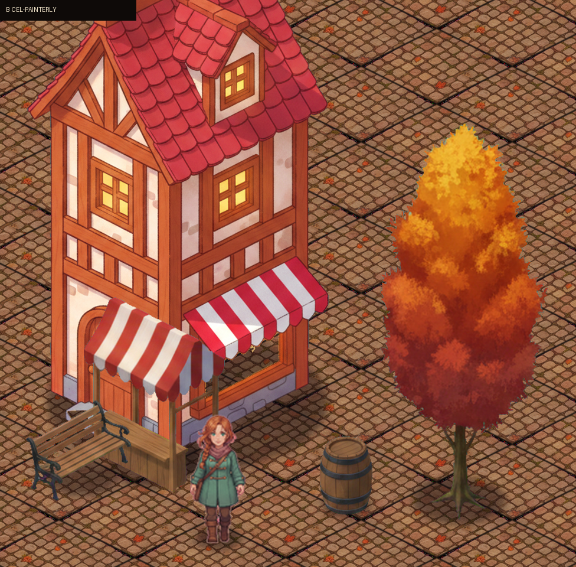

Full scene — A / B / C
A · INCUMBENT

Current shipped sprites. Glossy semi-realistic
mobile-iso render.
B · CEL-PAINTERLY (toward Vesper)

Soft cel shading, 2–3 tone steps, crisp HD-2D edges,
contours as darkened local hues.
C · GOUACHE STORYBOOK

Visible gouache brushwork, chunky light, saturated
autumn color, storybook energy.